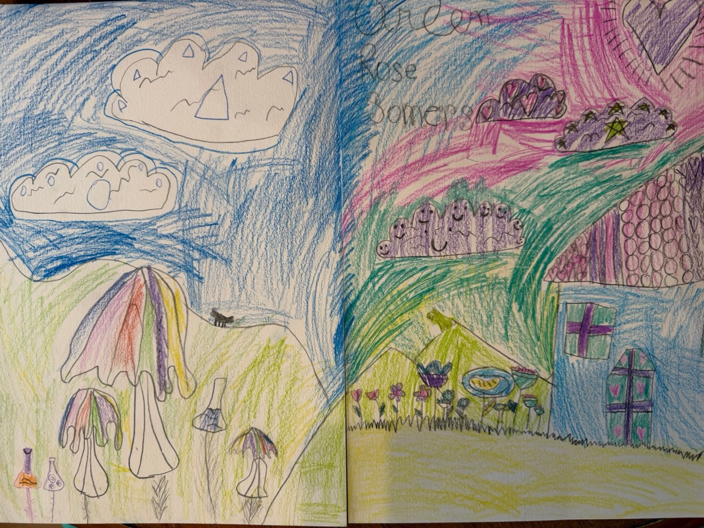

Loading grant records…
No open opportunities in this bed.
This is the model of what your AI assistant sees. Each plant is a grant opportunity: the taller and brighter it grows, the higher its gap score. A gold bloom means the deadline is close. A pale plant carries a neutral score — the feed says so plainly when research evidence is thin, instead of treating the score as a finding. Tap a plant to inspect it the way the MCP tools return it.
These plots use the feed snapshot from . The November 18 feed figures were 786 opportunities, 165 with confirmed research links.
Beds group grants by topic using their published title and synopsis. Other opportunities holds grants without a clear topic match.
Rigby's Cloud · Science Datastream · MCP Pass
Stop digging through Grants.gov. Ask your AI assistant instead.
A daily, AI-ready feed of US federal grant opportunities — cleaned, joined to the awards and papers behind them, scored for fit and gaps, and served straight to Codex or Claude Code through MCP. Every plant in this garden is one opportunity, tended fresh every morning.
$99 one-time · 90 days from redemption, not purchase · No subscription, no auto-renew · Free tier included

You never open a grants portal. You ask your AI assistant a question; it calls the garden's four tools and answers with deadlines, scores, and links. Pick a question to see the shape of an answer:
Choose a question and watch the tools work —
search, full record, links, then the gap read.
Raw federal data is a weed patch: duplicate notices, dead links, no connection between a funding call and the science it produced. The feed runs five layers over it every morning, so what reaches your assistant is already garden-ready.
Notices normalized into one record shape — agencies, deadlines, eligibility, and amounts you can actually compare.
Each opportunity linked to related NIH awards and OpenAlex papers, so you see the track record behind the call.
A transparent 0–100 fit score with stated reasons — and an honest neutral flag when the evidence isn't there yet.
A plain-language summary of what the opportunity wants and who it's for, ready for your assistant to reason over.
Rebuilt daily at 06:00 UTC. Every record carries its source link and retrieval date — every claim can be checked.
The pass connects over hosted MCP (Streamable HTTP, Bearer API key) at mcp.rigbyscloud.com. No local install, no database to maintain — your key is the whole setup.
opportunity_search
Search the day's open opportunities by topic, agency, or deadline window. The front gate of the garden.
opportunity_search("pediatric rare disease", days=60)
opportunity_get
The full record for one opportunity: summary, fit score with reasons, eligibility, amounts, and key dates.
opportunity_get(id) → score, reasons, deadlines
opportunity_links
The joined evidence: related funded awards and published papers, each with its source link and retrieval date.
opportunity_links(id) → awards + papers
gap_for_topic
The gap read: where a topic is crowded, where it's thin, and what's underfunded relative to the research behind it.
gap_for_topic("rare disease") → gap analysis
Start free to see the shape of the feed, or take the full garden for a single payment. Your 90 days begin the day you redeem your key — not the day you buy — so there's no clock running while you set up.
$0 forever
$99 one-time · 90 days
Checkout on Gumroad delivers a license key on your receipt page and by email. maxxster50.gumroad.com/l/uolxxa
Paste the license key and your purchase email at mcp.rigbyscloud.com/redeem. Your API key is shown once — save it somewhere safe. Your 90 days start here.
Add the MCP endpoint mcp.rigbyscloud.com/mcp with your API key as a Bearer token in Codex or Claude Code, following the included README — then just ask.
No. The 0–100 score is a transparent fit read with its reasons attached — topic match, evidence depth, deadline runway — not an oracle. And when an opportunity's research links aren't confirmed, the feed flags the score neutral rather than dressing up a guess.
US federal opportunities only, drawn from Grants.gov, joined to NIH RePORTER awards and OpenAlex papers. No state, foundation, or industry funding yet, and no bulk data dump — it's a live feed your assistant queries, not a file to download and watch go stale.
At redemption, not purchase. Buy today, redeem next month, and you still get the full 90 days. When they run out, nothing auto-renews — buy another pass only if you want one.
Any MCP client that supports hosted Streamable HTTP with a Bearer key — it's set up and documented for Codex and Claude Code. The free tier needs no purchase: 20 searches a day against a 7-day-delayed feed.
786 opportunities are in today's feed, scored and linked before you've had coffee. Give your assistant the garden instead of the weed patch.